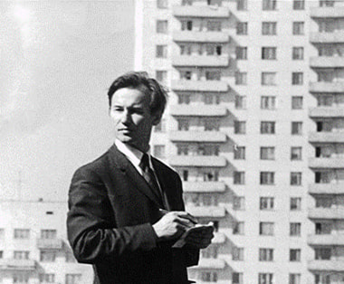

Памятник Освободителям Донбасса
Монумент представляет собой треугольную площадку с тремя наклонными стенами, символизирующими силуэты терриконов Донецка. У подножия горит Вечный огонь, а на одной из стен высечена надпись: «1943. Твоим освободителям, Донбасс». На другой стене изображены даты освобождения населённых пунктов советского Донбасса.
На площадке расположена скульптурная композиция, изображающая шахтёра и солдата, которые вместе держат меч остриём вниз, а левая рука солдата поднята, а шахтёра — отведена в сторону. За их спинами развевается знамя с пятиконечной звездой. Солдат представлен молодым мужчиной с резкими чертами, а шахтёр — более зрелым. Оба образа являются собирательными и созданы без натурщиков. Скульптуры выполнены из меди и имеют высоту восемнадцать метров, общая высота монумента с постаментом и знаменем превышает 30 метров.
Этот памятник был создан благодаря таким гениальным скульпторам как: Юрий Иванович Балдин и Александр Николаевич Поражнюк и архитекторам: Владимир Петрович Кишкань и Михаил Яковлевич Ксеневич, а также инженеру-конструктору Ефим Леонидович Райгородецкий. К сожалению, остались фотографии только Ю.И. Балдина и В.П. Кишканя.
